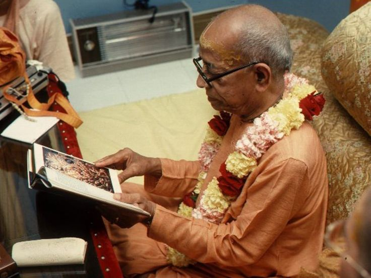

KRSNA IS NOT LIKE THAT

It was Prabhupāda's custom, while visiting the ISKCON temple on Henry Street in Brooklyn, to recieve the ISKCON artists and review their latest paintings for his books. But when one of the veteran painters, jadurāni-devī dāsi, showed Prabhupāda recent picture of Krşna in Vrndãvana, she got an unusual response.The picture showed youthful Lord Krsna, sitting in the bushes of Vrndavana. His head was tilted, and with His hand to His forehead, He was in a dejected mood. Beyond the bushes some of the gopīs were searching for Krşna.
“What is this?” asked Prabhupāda. It was as if he did not know what to make of it.
“Is something wrong?” asked Jadurāni. “This is Krsna lamenting because Rādhārāni has left Him.”
“No” said Prabhupāda.
“Yes”, said Jadurāni. “It's right there in The Teachings of Lord.Caitanya. Krsna is lamenting because Rādhāráni went off, and So He went into the bushes and was lamenting” “No”, said Prabhupāda. “Krsna's not Iike that.”
Jadurāni insisted that it was in the book, but Prabhupāda objected. ““Krsna does not lament like that,”” he said. Prabhupãda did not say exactly what was wrong, but the devotees became distressed, especially the artist. Everyone felt uncomfortable, until Srīla Prabhupāda found a solution. “You can use this painting for another idea,” he said. “This can be the picture where Krsna has a headache.” Prabhupāda leaned back satisfied and repeated, “Yes, Krsna has a headache.” Everyone sighed in relief, as Prabhupāda found another way to appreciate a devotee's service.
Ref. Srila Prabhupad Nectar by Baradraj dasa.